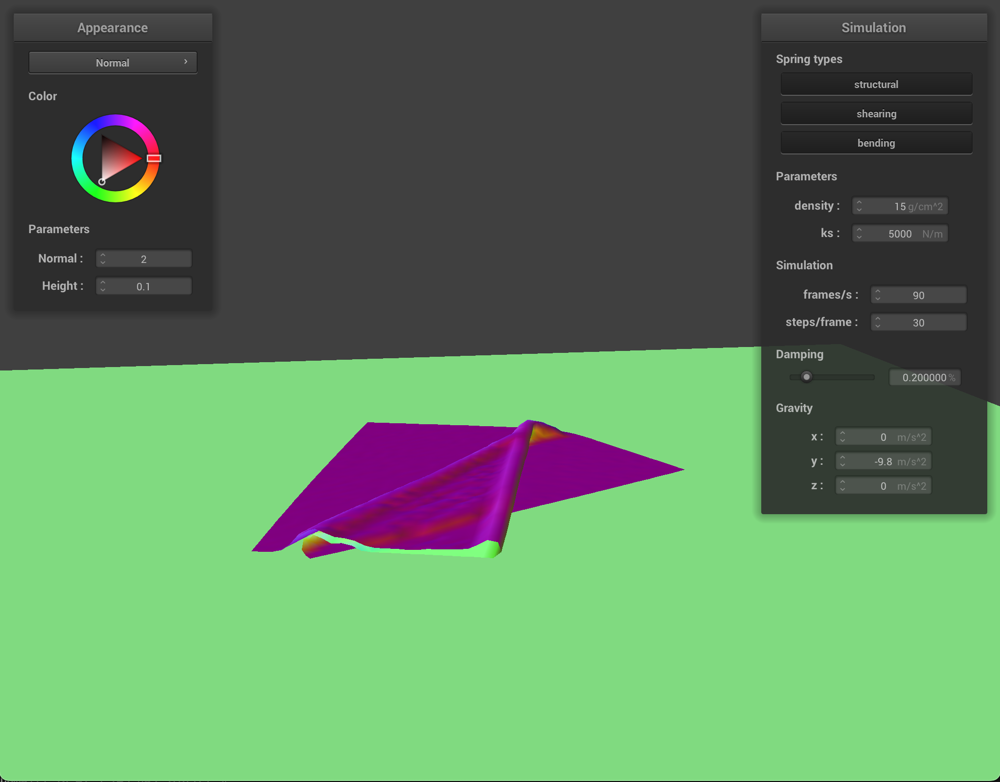
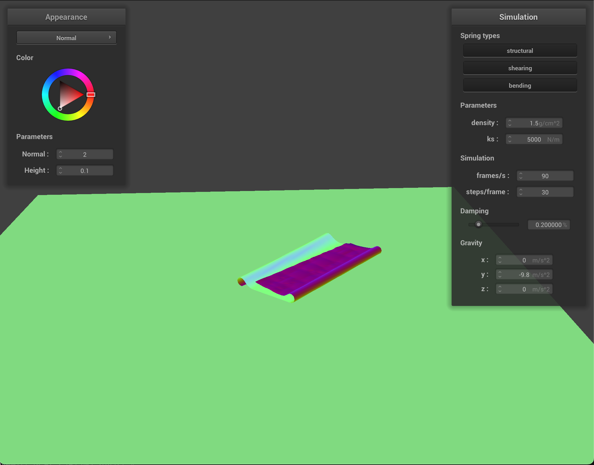

CS184/284A Spring 2025 Homework 4 Write-Up
Link to webpage: https://cal-cs184-student.github.io/hw-webpages-zkl-writing/
Link to GitHub repository: https://github.com/cal-cs184-student/sp25-hw4-zkl-4
Overview
In this homework, we implemented a cloth simulation system that integrates both physical modeling and shader programming. On the simulation side, we built a grid of masses connected by springs to represent the cloth. These masses interact via forces computed from external sources like gravity and via spring forces based on Hooke’s law. We used Verlet integration for numerical integration to update the positions of the point masses over time. The simulation also includes collision detection—with other primitives such as spheres and planes and self-collision handling using a spatial hashing technique—to prevent the cloth from intersecting itself.
In addition to the simulation, we explored several shader techniques to enhance the visual appearance of the cloth. We implemented texture mapping, bump mapping, displacement mapping, and environment mapping (mirror-like reflections) using Blinn–Phong shading. Each shader demonstrates a different aspect of material representation: while bump mapping perturbs normals for fine detail, displacement mapping actually alters the geometry; environment mapping adds realistic reflections by sampling a cubemap, and texture mapping provides a base color.
Overall, we learned a great deal about the interplay between physical simulation and GPU-based shading. It was especially interesting to see how variations in parameters like the spring constant, density, and damping affect the dynamic behavior of the cloth—ranging from extremely flexible and bouncy to nearly rigid. Additionally, combining shader effects to simulate material details provided valuable insights into how subtle changes in rendering can significantly impact the realism of the final output.
Part 1: Masses and springs
Screenshots of scene/pinned2.json from different viewing angles:
Wireframes with different constraints:
|
|
|
|
|
|
Part 2: Simulation via numerical integration
Effects of Changing Simulation Parameters
1. Spring Constant (ks)
Effect of a Very Low ks
Behavior:
- The springs exert only a weak restoring force when a point mass deviates from its rest length.
- The cloth behaves very floppy or slack, sagging under gravity and deforming easily under external forces.
- It forms exaggerated folds or wrinkles since the springs are too weak to pull it back to its rest shape.
Why: The restoring (spring) force is given by:
Fs = ks × (current_length − rest_length)
If k_s is low, even significant deviations generate a small restoring force, leading to a soft, draped appearance.
Effect of a Very High ks
Behavior:
- The springs generate strong forces for small deviations, making the cloth very stiff.
- The cloth quickly tries to return to its rest shape, which can cause rapid oscillations.
- In extreme cases, the cloth behaves like a nearly rigid panel or even exhibit numerical instability if the time step is not small enough.
Why: A high k_s produces a large restoring force for even minor deviations (Fs is large), thus enforcing the rest configuration strongly.
Some Interesting Differences of Different ks Parameter and When They Occur.
|
|
|
|
|
|
|
|
|
2. Density
Behavior:
-
Lower Density:
- Light point masses mean that external forces (such as gravity) are scaled down proportionally, so their acceleration remains roughly the same.
- However, since spring forces are independent of mass, the same spring force produces a higher acceleration relative to a lighter mass.
- This can make the cloth appear more "snappy" or overly reactive to spring forces, leading to stiffer responses and more pronounced oscillations.
-
Higher Density:
- Heavier point masses result from increased density, and although external forces also increase, the net external acceleration remains similar.
- The key difference is that the same spring forces yield lower accelerations with a heavier mass, making the cloth more sluggish and less reactive.
- This results in a softer, heavier appearance with reduced oscillations.
Why: The mass is computed as:
mass = (width × height × density) / (num_width_points × num_height_points)
While external forces (e.g., gravity) are scaled with mass so that external acceleration remains similar, the spring forces are fixed. With low density, the springs' fixed force produces relatively higher acceleration, making the cloth react more sharply. Conversely, higher density produces lower acceleration from the same spring forces, resulting in a more damped response.
Some Interesting Differences of Different density Parameter and When They Occur.
|
|
|
|
|
|
|
|
|
3. Damping
Effect of Damping:
- Low damping (damping factor near 1): The cloth retains most of its kinetic energy, causing sustained oscillations or "bouncing" after being disturbed.
- High damping (lower damping factor): Energy is quickly dissipated, reducing oscillations and allowing the cloth to settle into its rest position faster.
Why: Damping in the Verlet integration affects the contribution of the previous frame's motion:
pm.position = pm.position + damping × (pm.position − pm.last_position) + acceleration × delta_t²
A lower contribution from the previous position (due to high damping) results in rapid energy loss, while low damping retains the momentum.
Some Interesting Differences of Different damping Parameter and When They Occur.
|
|
|
|
|
|
|
|
|
Summary
- Spring Constant (ks):
- Low ks: Cloth is soft, saggy, and deforms easily.
- High ks: Cloth is stiff, resists deformation, and may oscillate strongly.
- Density:
- Lower Density: Spring forces become relatively dominant, causing more reactive and possibly oscillatory behavior even though external accelerations remain similar.
- Higher Density: The cloth moves more sluggishly under the same spring forces, leading to a softer, heavier feel.
- Damping:
- Low Damping: More bounce and persistent oscillations.
- High Damping: Faster energy loss and a quicker settlement into the rest position.
Part 3: Handling collisions with other objects
The collision handling system is integrated into the Cloth::simulate function after the main Verlet integration step (where new position values are calculated based on forces and last_position) and after the spring constraint satisfaction step. It operates on each non-pinned PointMass of the cloth. The implementation uses polymorphism to handle different collision object types (Spheres and Planes) uniformly.
-
Polymorphic Collision Detection:
- The
Cloth::simulatefunction receives a list ofCollisionObject *pointers (collision_objects). - It iterates through each
PointMass(pm) in thecloth.point_masses. - For each non-pinned
pm, it iterates through everyCollisionObject *objin thecollision_objectslist. - It calls
obj->collide(pm). This dynamically dispatches the call to the correctcollidemethod (Sphere::collideorPlane::collide) based on the actual type of the object pointed to byobj.
- The
-
Sphere Collision (
Sphere::collide):- Detection:
- Calculates the vector
dirfrom the sphere'soriginto the point mass's currentposition. - Calculates the squared distance
dist2between the point mass and the sphere's center. - A collision is detected if
dist2 <= radius2(the point mass is inside or exactly on the sphere's boundary).
- Calculates the vector
- Resolution:
- If a collision is detected:
- An edge case is handled where
dist2is zero (point mass exactly at the sphere center). In this case, an arbitrary upward direction(0, 1, 0)is used to push the point mass out. - Otherwise, the direction vector
diris normalized. - The
tangent_pointis calculated: this is the closest point on the sphere's surface to the point mass's current position (origin + dir * radius). - Verlet Integration Consistency: A
correctionvector is calculated from the point mass's previous position (pm.last_position) to thetangent_point. This represents the path the point mass *should* have taken to end up exactly on the surface. - This
correctionvector is then scaled by(1 - friction). Friction reduces the tangential component of the correction, simulating energy loss. - The point mass's final
positionis updated by adding thisscaled_correctionvector to itslast_position(pm.position = pm.last_position + scaled_correction).
- Detection:
-
Plane Collision (
Plane::collide):- Detection:
- Calculates the signed distance of the point mass's current
positionfrom the plane (signed_dist_curr = dot(pm.position - point, normal)). - Calculates the signed distance of the point mass's last position (
pm.last_position) from the plane (signed_dist_last). - A collision is detected if the point mass crossed the plane (
signed_dist_curr * signed_dist_last <= 0) or if it is currently on the wrong side (signed_dist_curr < 0).
- Calculates the signed distance of the point mass's current
- Resolution:
- If a collision is detected:
- Calculate the point mass's movement vector
dir(pm.position - pm.last_position). - Handle the edge case where movement is nearly parallel to the plane. In this specific implementation, it pushes the point mass directly away from the plane based on its
last_positionand a smallSURFACE_OFFSET. - Otherwise, calculate the interpolation factor
t(between 0 and 1) representing *when* along the trajectory fromlast_positiontopositionthe point mass intersected the plane. - Clamp
tto the range [0, 1]. - Calculate the exact point of intersection on the plane:
tangent_point = pm.last_position + dir * t. - Define a target position
offset_pointslightly offset from thetangent_pointalong the plane'snormaldirection (tangent_point + normal * SURFACE_OFFSET). This prevents floating-point issues. - Verlet Integration Consistency: Calculate the
correctionvector required to move from thepm.last_positionto the desiredoffset_point. - Scale this
correctionvector by(1 - friction). - Update the point mass's final
positionby adding thescaled_correctionto itslast_position(pm.position = pm.last_position + scaled_correction).
- Detection:
This approach ensures that point masses are pushed out of collision objects in a way that is stable and consistent with the Verlet integration scheme, preserving the simulation's momentum characteristics while accounting for surface friction.
Cloth Simulation Spring Constant Analysis
Image 1: Low Spring Constant (ks = 500)

|
This simulation shows cloth with the lowest spring constant value. The fabric appears extremely soft and pliable, creating dramatic folds and pronounced draping. The cloth conforms closely to the sphere while generating numerous natural-looking folds that hang down significantly. This resembles a lightweight, flowing fabric like silk or fine cotton that readily deforms under its own weight.
Image 2: Default Spring Constant (ks = 5000)
|
|
With the default spring constant, the cloth displays moderate stiffness. The folds are still visible but are less pronounced than in the first image. The cloth maintains more of its original shape while still adapting to the sphere's form. This simulation resembles a standard medium-weight fabric like cotton or polyester.
Image 3: High Spring Constant (ks = 50000)
|
|
The highest spring constant produces a much stiffer cloth. The fabric appears almost rigid with minimal folding and draping. It strongly maintains its shape and resists deformation significantly more than the other examples. This resembles a very stiff material like canvas, heavy denim, or even thin sheet metal.
Comparison and Technical Explanation
These differences occur because the spring constant (ks) directly controls how stiff the springs are between the cloth's point masses. Higher values create stronger restoring forces when springs are stretched, making the fabric more resistant to deformation. Lower values allow the springs to stretch more easily, resulting in a softer, more flexible cloth.
In the simulation code, spring forces are calculated as: force_magnitude = spring_constant * (current_length - spring.rest_length)
This formula directly shows how increasing the spring constant leads to proportionally stronger forces that resist deformation, creating the visual differences observed in the three simulations.
Part 4: Handling Self-Collisions
Self-collision handling prevents the cloth from intersecting with itself, which is crucial for realistic cloth simulation. The implementation uses a spatial hashing approach to efficiently detect potential collisions without checking every pair of point masses.
-
Spatial Hashing Approach:
- The simulation uses a spatial hashing technique to divide 3D space into cells or "buckets."
- Point masses that are in the same spatial cell are considered potential collision candidates.
- This reduces the algorithmic complexity from O(n²) to roughly O(n), where n is the number of point masses.
- The spatial hash map is rebuilt each simulation step to account for the cloth's movement.
-
Building the Spatial Map (
build_spatial_map):- The method first clears any existing spatial map by deleting the previous entries.
- It then iterates through all point masses in the cloth.
- For each point mass, it:
- Calculates a hash value based on the point mass's position using the
hash_positionfunction. - Creates a new vector of point mass pointers for that hash if it doesn't exist yet.
- Adds the current point mass pointer to the vector associated with that hash value.
- Calculates a hash value based on the point mass's position using the
- The result is a map where each key (hash value) corresponds to a specific cell in 3D space, and the value is a list of point masses in that cell.
-
Self-Collision Detection and Resolution (
self_collide):- For each non-pinned point mass, the method:
- Calculates the hash value for the point mass's current position.
- Initializes a correction vector to zero and a correction count to zero.
- Checks if the current hash exists in the spatial map.
- If it exists, iterates through all point masses in the same spatial cell.
- For each candidate (excluding self), checks if they're too close (less than twice the cloth thickness).
- If they're too close, calculates a normalized direction vector pointing away from the other point mass.
- Computes a correction magnitude based on the minimum allowable distance minus the actual distance.
- Adds this scaled correction vector to the accumulated correction.
- Increments the correction count.
- After checking all candidates, if any corrections are needed (count > 0):
- Averages the correction vector by dividing by the correction count.
- Further scales the correction by dividing by the number of simulation steps for stability.
- Applies the final correction to the point mass's position.
- For each non-pinned point mass, the method:
-
Position Hashing (
hash_position):- The function converts a 3D position into a unique float identifier that represents which 3D cell contains that position.
- It first calculates the dimensions of each cell:
- Width dimension is set to 3 * cloth width / number of width points.
- Height dimension is set to 3 * cloth height / number of height points.
- The third dimension is set to the maximum of width and height cell dimensions.
- It then computes the discrete cell coordinates by dividing each position component by its corresponding cell dimension and taking the floor.
- Finally, it combines these discrete coordinates into a single hash value using a simple formula:
hash = x * 31 * 31 + y * 31 + z. - This hash function creates a unique mapping from 3D space to a 1D key that can be used in the hash map.
This self-collision handling approach ensures that the cloth behaves realistically by preventing self-intersections while maintaining computational efficiency. The spatial hashing technique is particularly important for performance, as it avoids the need to check every possible pair of point masses, which would be prohibitively expensive for high-resolution cloth simulations.
Screenshots that document how cloth falls and folds on itself:
|
|
|
|
|

|
How Varying Density and ks Affects Cloth Behavior (with Self-Collision)
Varying Density (with constant ks = 5000)
High Density (e.g., density = 150): With a high density, each point mass is heavier. Although the external forces (like gravity) are scaled by mass so that the overall gravitational acceleration remains roughly similar, the fixed spring forces produce relatively lower accelerations on the heavier mass. This means that the cloth tends to fall more slowly and be less “lively.” The cloth exhibits a more sluggish motion as it drapes over itself – it may settle with deep folds but lacks the energetic bouncing.
Moderate Density (e.g., density = 15): A moderate density produces a balanced behavior. The cloth falls at a realistic pace, and the interplay between spring forces and mass yields natural-looking draping and folding. The self-collision handling manages the interactions between folds smoothly, leading to a convincing cloth simulation.
Low Density (e.g., density = 1.5): For a very low density, the point masses are extremely light. In this case, even though the external forces are scaled down as well, the fixed spring forces dominate, causing very high accelerations. The cloth becomes overly reactive – it may flutter, oscillate, or bounce wildly when different parts collide with each other. This can result in an overly dynamic and less believable simulation.
Screenshots of How Varying density Affect the Behavior of the Cloth:
|
|
|
|

|
|
|
|

|
|
|
Varying Spring Constant ks (with constant density = 15)
Low ks (e.g., ks = 500): A low spring constant means the restoring forces are weak. As a result, the cloth is very soft and floppy. When the cloth falls on itself, it deforms easily, draping and crumpling without much internal resistance. The structure is loose and the folds are broad and slumped because the springs are not strong enough to pull the cloth back toward its rest length.
Moderate ks (e.g., ks = 5000): With a moderate spring constant, the cloth shows a balanced behavior. The springs are stiff enough to maintain some structural integrity, so as the cloth falls and collides with itself, it forms realistic folds and wrinkles. The cloth exhibits a natural drape with some bouncing when colliding, but overall it retains believable dynamics.
High ks (e.g., ks = 50000): A very high spring constant generates extremely strong restoring forces. This causes the cloth to behave almost like a rigid sheet. Even when falling on itself, the cloth resists deformation and instead may develop sharp, abrupt wrinkles or bounce off itself. With such stiffness, self-collisions result in a very taut, and sometimes unstable, behavior since the springs aggressively pull the structure toward its rest state.
Screenshots of How Varying ks Parameter Affect the Behavior of the Cloth:
|
|
|
|
|
|
|
|
|
|
|
|
Part 5: Shader Programming
What is a Shader Program?
A shader program is a small, specialized program that runs in parallel on a GPU (Graphics Processing Unit) to perform specific operations in the graphics rendering pipeline. Unlike traditional CPU programs that execute sequentially, shaders take advantage of the highly parallel architecture of GPUs to process thousands or millions of vertices and pixels simultaneously, making them ideal for real-time graphics applications.
How Vertex and Fragment Shaders Work Together
Vertex and fragment shaders work together in a pipeline to create lighting and material effects:
-
Vertex Shader:
- Executes first in the pipeline and runs once per vertex in the mesh
- Transforms vertex positions from model space to world space and ultimately to screen space (setting
gl_Position) - Processes per-vertex attributes like positions, normals, tangents, and UV coordinates
- Passes these processed attributes as "varying" variables to the fragment shader
- Can perform displacement mapping by altering the actual geometry of the model
-
Fragment Shader (Pixel Shader):
- Executes after rasterization, once per fragment (potential pixel) that will appear on screen
- Receives interpolated values from the vertex shader based on barycentric coordinates
- Calculates the final color of each fragment based on lighting models, textures, and other effects
- Outputs the final color that will be displayed on screen
- Implements lighting calculations, texture mapping, bump mapping, and environment mapping
-
Communication Between Shaders:
- Vertex shader outputs become fragment shader inputs through "varying" variables
- Both can access shared "uniform" variables that remain constant for all vertices/fragments
- The vertex shader can precalculate values to optimize fragment shader performance
This division of labor is highly efficient - vertex shaders handle geometric transformations for typically fewer vertices, while fragment shaders handle color computations for the much larger number of pixels, with the GPU handling the interpolation between vertices automatically.
The Blinn-Phong Shading Model
The Blinn-Phong shading model is a local illumination model that calculates the color of a surface point based on three lighting components: ambient, diffuse, and specular. It creates realistic lighting by approximating how light interacts with different types of materials.
The complete Blinn-Phong model is expressed as:
L = ka · Ia + kd · (I/r2) · max(0, n·l) + ks · (I/r2) · max(0, n·h)p
Where:
- ka, kd, ks are the ambient, diffuse, and specular reflection coefficients
- Ia is the ambient light intensity and I is the point light intensity
- r is the distance from the light to the surface point
- n is the surface normal vector
- l is the light direction vector (from surface to light)
- h is the halfway vector between the light direction and the view direction
- p is the shininess exponent that controls the size of specular highlights
Blinn-Phong Components:
-
Ambient Component:
The ambient term (ka · Ia) approximates indirect illumination by adding a constant amount of light to all surfaces regardless of orientation. This prevents completely dark shadows where no direct light reaches. It's a simple approximation that ensures objects are still visible even when not directly illuminated.
In our shaders, this is implemented as:
vec3 ambient = k_a * u_light_intensity; -
Diffuse Component:
The diffuse term (kd · (I/r2) · max(0, n·l)) models light that is scattered equally in all directions from a rough surface. The intensity varies based on the angle between the surface normal and the light direction (Lambert's cosine law). Surfaces directly facing the light receive maximum illumination, while surfaces at increasing angles receive less light.
In our shaders, this is implemented as:
vec3 diffuse = k_d * (u_light_intensity / distance2) * max(dot(N, L), 0.0); -
Specular Component:
The specular term (ks · (I/r2) · max(0, n·h)p) models mirror-like reflections from shiny surfaces. It creates highlights that are visible when the viewing angle is close to the perfect reflection angle. The Blinn-Phong model uses the halfway vector between the view and light directions for efficiency. The shininess exponent (p) controls how focused the highlight appears - higher values create smaller, sharper highlights typical of more polished surfaces.
In our shaders, this is implemented as:
vec3 specular = k_s * (u_light_intensity / distance2) * pow(max(dot(N, H), 0.0), p);
Screenshot of Blinn-Phong shader outputting only the Ambient Component:

|
Screenshot of Blinn-Phong shader outputting only the Diffuse Component:
|
|
Screenshot of Blinn-Phong shader outputting only the Specular Component:
|
|
The three components are added together to produce the final illumination at each point. By adjusting the coefficients (ka, kd, ks) and the shininess exponent (p), we can simulate materials ranging from rough matte surfaces (high diffuse, low specular) to polished metals (high specular with a high shininess exponent).
In our implementation, the Blinn-Phong model is further enhanced through texture mapping (applying image data to surfaces), bump mapping (simulating small-scale surface detail without changing geometry), displacement mapping (actually modifying geometry based on height maps), and environment mapping (creating reflective surfaces that mirror their surroundings).
Screenshot of Entire Blinn-Phong Model:
|
|
Screenshot of Texture Mapping Shader Using Custom Texture:
Bump Mapping and Displacement Mapping Comparison:
Screenshots of Bump Mapping on the Cloth and on the Sphere:
|
|
|
|
|
|
Screenshot of Displacement Mapping on the Sphere:
|
|
|
|
Comparison bewteen two approaches and resulting renders:
Bump Mapping
Bump mapping perturbs the surface normals in the fragment shader based on a height map, but the underlying geometry (vertex positions) stays the same. In the final render, the cloth appears to have fine detail or “bumps” on its surface, but if we look at its silhouette, it remains relatively smooth. Bump mapping is more efficient to compute since it’s purely a shading trick—no extra geometry is generated—yet large or dramatic folds can look less convincing because the cloth shape itself remains unchanged.
Displacement Mapping
Displacement mapping actually modifies the vertex positions according to the height map. This means we’re physically pushing and pulling the mesh to create real geometric detail. The result is a more pronounced, volumetric look, with deeper folds and a changed silhouette—notice how the edges of the cloth in the second figure are no longer smooth and have noticeable peaks and valleys. However, displacement mapping requires more computation and a sufficiently dense mesh to capture the extra geometry, making it more expensive than bump mapping but also more realistic for large, pronounced deformations.
How the two Shaders React to the Sphere by Changing the Sphere Mesh’s Coarseness:
|
|
|
|
|
|
Mirror Shader Screenshots:
|
|
|
|
|
|
Extra Credit: Custom Shader:
Explanation of Custom Shader
This custom fragment shader combines several techniques to produce a rich, realistic material appearance. It samples a base diffuse texture, applies bump mapping to perturb the surface normals using a height map, computes environment reflections, and blends these results with a standard Blinn–Phong lighting model.
First, the shader obtains the diffuseColor by sampling the base texture (u_texture_1) with the UV coordinates (v_uv). Next, it performs bump mapping: it calculates the texel size from the height map (u_texture_2), samples the height at the current UV as well as offset positions (to get height variations), and computes the finite differences (dU and dV). These differences form a local-space normal vector ((-dU, -dV, 1.0)) which is then normalized.
To transform this local normal into model space, the shader builds a TBN matrix. The tangent (v_tangent) is provided by the vertex shader and the normal (v_normal) is also interpolated. The bitangent is computed using the cross product of the normal and the tangent. Multiplying the local normal by this TBN matrix results in a perturbed, or "bumped," normal.
The shader then computes the reflection vector. It determines the view direction by subtracting the camera position (u_cam_pos) from the fragment position (v_position), and uses the GLSL function reflect with the bumped normal to obtain the reflection direction. This vector is used to sample an environment cubemap (u_texture_cubemap), yielding reflective color information.
For the final lighting, a Blinn–Phong model is applied. The shader calculates the diffuse component using the dot product of the bumped normal and the light direction (u_light_pos minus v_position.xyz), adds an ambient term (a fraction of the diffuse color), and computes a specular highlight using the half-vector between the light direction and view direction. The result is a combined Phong lighting color.
Finally, the Phong color is blended with the environment map reflection based on the reflectivity factor (u_reflectivity). This blended color is output as the final fragment color.
Custom Shader Screenshots:
|
|
|
|
|
|
|
|